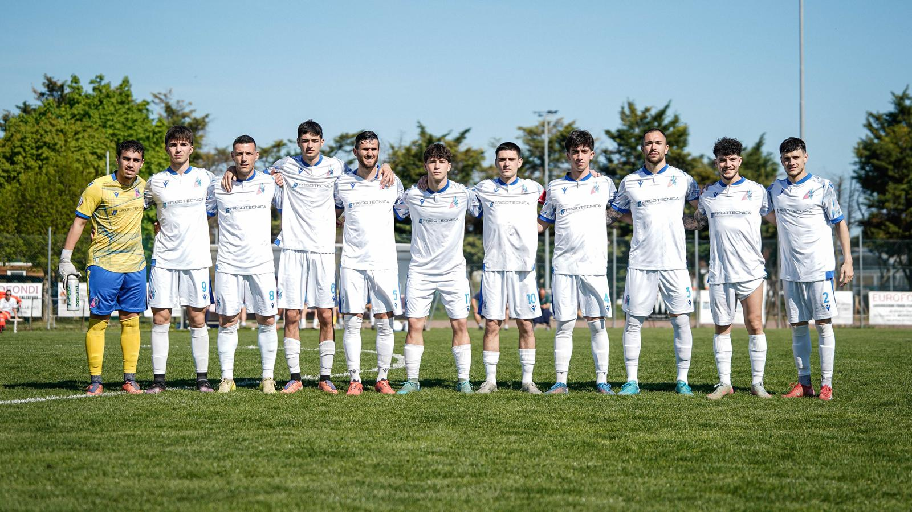
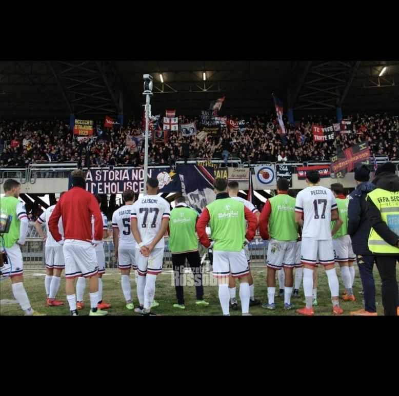

La mia storia in immagini
I miei momenti
Le foto che raccontano il percorso — dai primi calci al pallone fino ad oggi.

I primi anni — da piccolo

In campo con la squadra

Un momento speciale
Calcio, crescita e la strada verso il futuro. Una storia che inizia a 4 anni e non finisce qui.
Dal primo campo ai giorni di oggi, il calcio mi ha formato come persona prima ancora che come giocatore.
Il primo pallone, il primo campo, la prima maglia. Dall'età di 4 anni fino ai 12 ho mosso i miei primi passi nella Mariner, dove è nata la mia passione vera per questo sport.
Cinque anni importanti al Porto d'Ascoli nel settore giovanile. Anni di crescita intensa: allenamenti quotidiani, partite difficili, vittorie sudate. Ho imparato il rispetto dei compagni, la disciplina e cosa significa far parte di un gruppo vero.
Il salto più importante: la Sambenedettese in Serie D. Un livello diverso, più esigente, dove ho dovuto dimostrare ogni giorno di meritarmi il campo. Ho incontrato chi non credeva in me — ho risposto con il lavoro e con i fatti.
Il percorso è continuato tra squadre di Eccellenza e Promozione. Ogni cambio di maglia è stata una nuova sfida, un nuovo spogliatoio, nuove persone con cui costruire qualcosa. Ho imparato ad adattarmi, a farmi valere e a portare rispetto ovunque andassi.
Tutto ciò che il calcio mi ha insegnato — determinazione, rispetto, capacità di rialzarsi — lo porto con me anche fuori dal campo, nella scuola e nelle scelte che sto costruendo per il futuro.
Le foto che raccontano il percorso — dai primi calci al pallone fino ad oggi.


Verso me stesso, verso i compagni, verso chi la pensava diversamente. Sul campo e nella vita.
Non mi sono mai tirato indietro davanti alle difficoltà. La fatica non è un ostacolo — è il percorso.
Ho imparato a riconoscere i miei limiti e a lavorarci sopra, senza nasconderli.
Ogni caduta è stata un'occasione per rialzarsi più forte, dentro e fuori dal campo.